2026 광안리 발코니 음악회 행사 용역
정성적 평가서 (제안서 요약본)
| 항목 | 비중 | 비고 |
|---|---|---|
| 기획·연출 | 20% | 프로그램 설계 |
| 출연·콘텐츠 | 30% | 아티스트/콘텐츠 |
| 무대·기술 | 25% | 음향/조명/영상 |
| 운영·안전 | 15% | 현장 운영/방역 |
| 홍보·마케팅 | 10% | 콘텐츠/광고 |
Slide 1
정성적 평가서 『 광안리 발코니 음악회 행사 용역 』 2026 년 2 월 10 일
Slide 2
Part Ⅱ . 사업추진계획 1. 행사기획 및 연출 2) 사업 추진전략 10 수영구민과 관광객 모두가 경험하는 다층적 / 상생공연 콘텐츠 지역 예술 생태계 선순환 및 광안리 해변 상권 활성화 견인 대한민국을 대표하는 ‘야외 야간 음악회’ 브랜드로 자리매김 대한민국 대표 야외 공연 콘텐츠 ‘ 광안리 발코니 음악회 ' [ 기획 / 연출 ] 다층적 공간활용 + 지역 아티스트와 상생 [ 운영 / 소통 ] 실시간 사연 소개 '광안리 낭만' 바이럴 확산 [ 시스템 / 기술 ] 광안리 야경과 공존하는 빛 창의적인 공연 / 퍼포먼스 성공 전략
Slide 3
Part Ⅱ. 사업추진계획 2. 연간 총괄 계획 3) 행사 프로그램 총괄 11 숨은 메이커 찾기 국내 전문 메이커 스페이스 + 개인메이커 작품 전시 과학관 후원회 과학동아리 창작물 전시 및 체험 부스 외부 협력부스 3 개소 유치 국내외 전문 메이커들을 만나고 소통하는 장 유명 메이커를 만나다 유명 강사 , 전문 메이커 초청 강연 1. 메이킹 능력을 2 배 올려줄 AI 활용능력 빠르게 익히기 (IT 연구소 김덕진 소장 ) 2. 숨숨의 착시 메이킹 ( 긱블 메이커 , 크리에이터 숨숨 ) 우주 탐사로버 메이커톤 주어진 우주프로젝트 를 수행하기 위한 미션 챌린지 분야별 전문가와 팀을 구성하여 진행 국립부산과학관의 인프라를 활용한 해커톤 형식의 경연대회 개최 3 월 5 월 4 월
Slide 4
Part Ⅱ. 사업추진계획 2. 연간 총괄 계획 3) 행사 프로그램 총괄 12 숨은 메이커 찾기 국내 전문 메이커 스페이스 + 개인메이커 작품 전시 과학관 후원회 과학동아리 창작물 전시 및 체험 부스 외부 협력부스 3 개소 유치 국내외 전문 메이커들을 만나고 소통하는 장 유명 메이커를 만나다 유명 강사 , 전문 메이커 초청 강연 1. 메이킹 능력을 2 배 올려줄 AI 활용능력 빠르게 익히기 (IT 연구소 김덕진 소장 ) 2. 숨숨의 착시 메이킹 ( 긱블 메이커 , 크리에이터 숨숨 ) 우주 탐사로버 메이커톤 주어진 우주프로젝트 를 수행하기 위한 미션 챌린지 분야별 전문가와 팀을 구성하여 진행 국립부산과학관의 인프라를 활용한 해커톤 형식의 경연대회 개최 6 월 8 월 7 월
Slide 5
Part Ⅱ. 사업추진계획 2. 연간 총괄 계획 3) 행사 프로그램 총괄 13 숨은 메이커 찾기 국내 전문 메이커 스페이스 + 개인메이커 작품 전시 과학관 후원회 과학동아리 창작물 전시 및 체험 부스 외부 협력부스 3 개소 유치 국내외 전문 메이커들을 만나고 소통하는 장 업사이클링 공연 창의적 퍼포먼스 , 공연 1. 재활용 악기를 활용한 코믹 타악 퍼포먼스 ‘ 잼스틱 ＇ 2. 업사이클링 아동극 ‘ 쿵쿵쿵쾅 고물놀이터 ’ 유명 메이커를 만나다 유명 강사 , 전문 메이커 초청 강연 1. 메이킹 능력을 2 배 올려줄 AI 활용능력 빠르게 익히기 (IT 연구소 김덕진 소장 ) 2. 숨숨의 착시 메이킹 ( 긱블 메이커 , 크리에이터 숨숨 ) 우주 탐사로버 메이커톤 주어진 우주프로젝트 를 수행하기 위한 미션 챌린지 분야별 전문가와 팀을 구성하여 진행 국립부산과학관의 인프라를 활용한 해커톤 형식의 경연대회 개최 9 월 11 월 10 월 12 월
Slide 6
Part Ⅱ. 사업추진계획 1. 사업 총괄 계획 4) 체험 콘텐츠 총괄표 2024 헬로 메이커 프로그램 내용 개막식 - 식전 공연 ( 야외 퍼포먼스 ) - 개막 선언 ( 골든부저 축포 ) - 개회사 , 인사말 , 축사 등 - 헬로 메이커 어워즈 시상식 ( 메이커 작품 , 영상 , 지정 주제 제품 부문 ) - 내빈실 운영 - 행사장 투어 이벤트 전시 및 체험프로그램 - 주제별 전시 / 체험 공간 경연대회 - 우주 탐사로버 메이커톤 시상식 - 헬로메이커 어워즈 시상식 (1 일차 ) ( 메이커 작품 , 영상 , 지정 주제 제품 부문 ) 헬로메이커 경연대회 시상식 (2 일차 ) ( 우주 탐사로버 메이커톤 ) 2024 헬로 메이커 프로그램 내용 전문가 초청 강연 전문 메이커 / 유명 과학커뮤니케이터 ㆍ IT 커뮤니케이션 연구소 김덕진 소장 ㆍ긱블 메이커 숨숨 공연 + 퍼포먼스 공연 및 퍼포먼스 과학 공연 1 회 / 야외 퍼포먼스 1 회 워크숍 메이커 워크숍 운영 2 회 숨숨 + 메이킹 워크숍 AI + 메이킹 워크숍 아무거나 메이커 체험존 자율 메이킹 체험 zone 생성형 AI 활용 나만의 굿즈 만들기 보드게임 + 메이킹 체험 크리에이터 zone 전문 + 아마추어 유튜버를 위한 공간 동시 송출 및 녹화 예정
Slide 7
2. 세부 추진계획 1) 전시 / 체험 행사연출계획 ｜ Ⅲ. 행사공간계획 Part Ⅱ. 사업추진계획 15 일시 / 장소 3. 28( 토 ) 20:15 – 21:15 수영구생활문화센터 발코니 목표 관람객 000 명 이상 / 무사고 광안리의 봄 1~2월의 겨울 분위기를 탈피하여 광안리의 봄을 깨우는 상큼하고 부드러운 어쿠스틱 공연. 3 월의 음악회 구 분 참 여 팀 비고 10:00~18:00 음향 / 조명 / 특수효과 설치 기술팀 18:00~20:15 시스템 최종 점검 및 관람 구역 동선 확보 20:15~21:15 오픈 스테이지 / 메인 공연 21:15~22:30 안내 멘트 송출 및 시스템 철수 LED, 안내음성 공연자 ( 팀 ) 공연자 ( 팀 ) 운영사항 홍보 / 마케팅 스텔라장 교통비 일부지원 / 숙박 및 식사 / 기념품 / 교류의 장 디지털 사연 보드 (LED) / 제로 웨이스트 수영구청 홈페이지 / 블로그 / SNS
Slide 8
3. 행사장 구성 계획 1) 행사장 구성 행사연출계획 ｜ Ⅲ. 행사공간계획 Part Ⅱ. 사업추진계획 16 A 자율 메이킹 체험 아케이드 게임 만들기 , 고카트 탑승 체험 , 아두이노 체험 , 자율 보드게임 등 B 후원회 청소년 과학동아리 성과공유회 C 메이커 전시 / 체험 부스 ( 실외 ) 일반 / 챌린저 / 숙련자 D 메이커 전시 / 체험 부스 ( 실내 ) 일반 / 챌린저 / 숙련자 E 생성형 AI 포토존 F 시상식 / 워크숍 / 특별공연 G 크리에이터 존 H 전문 메이커 단체 ( 외부 협력 ) 콘텐츠별 특화된 체험환경을 제공하기 위하여 과학관 내 인프라 적극 활용
Slide 9
Part Ⅱ. 사업추진계획 2) 공간 연출 17 전시 전문업체와 연계하여 과학관의 인프라를 적극 활용하고 각 체험 콘텐츠의 특색을 살리는 행사장 조성 행사장 조성 / 연출 3. 행사장 구성 계획 ▲ LED 전광판 ( 가로 11.5m x 높이 3.5m), 카메라 3 대 , 조명 , 유무선 마이크 및 음향장비 , 중계 콘솔 장비 등
Slide 10
19 Part Ⅱ. 사업추진계획 1) 참여인력 4 . 인력운영계획 이브닝영도아트페스타 , 울산옹기축제 , 일루와페스티벌 , 가야문화축제 등 다수 문화적 소양과 예술적 감성 , 지역 네트워크 막강한 문화기획 전문가 그룹 연극 , 예술경영 , 무대의상 , 광고마케팅 , 신문방송 전공 1 10 년차 중견 문화기획사로서 축제 ・ 공간 ・ 커뮤니티 주력 2 지역문화콘텐츠특성화사업 특별상 수상 (22 년 ) [ 학장천그린 Art 놀이터 ] 3 부산근현대역사관 본관 개관식 및 주요 의식・의전행사 연출 4 무대 , 음향 , 조명 , 영상 등 무대기술 분야 견고한 네트워크 구축 5 부산시가 조성한 청년문화공간 민간최초 직접 위수탁계약 및 5 년차 운영 중 6
Slide 11
19 Part Ⅱ. 사업추진계획 2) 사업수행실적 4 . 인력운영계획
Slide 12
Contens 1 2 3 4 Part Ⅰ 제안개요 제안의 목적 및 배경 제안의 범위 제안의 특징 및 장점 기대효과 홍보 / 마케팅 Part Ⅳ 1 홍보 / 마케팅 Part Ⅱ 추진계획 세부 추진계획 행사장 구성 계획 사업 총괄계획 1 3 2 추진일정 및 업무분장 전담인력 투입계획 ( 참여인력 이력사항 ) 1 2 사업관리 Part Ⅲ 업무보고 및 검토 계획 3 인력운영계획 4 안전 및 방역 관리 계획 4 비상 대응 계획 5 자원과 네트워크 활용계획 5 2 기념품 디자인 / 제작
Slide 13
Part Ⅱ. 사업추진계획 3) 인력운영계획 20 4 . 인력운영계획 각 과업마다 1 인 이상의 실무자 (PM, 실무책임자 ) 로 구성된 TF 팀 을 구성하고 인력의 중복 투입을 최소화하여 동시 진행 행사를 효과적으로 운영 2. 동시 진행 행사의 원활한 운영을 위해 행사분야별 담당팀 으로 관리 담 사무국 구성 및 운영 - 사업책임자 (PM) 및 행사분야별 팀장 배정 - 전담 사무국 운영을 통해 전체 행사 투입인원의 섭외 / 배치 / 안전관리 진행 인력운영계획
Slide 14
Part Ⅱ. 사업추진계획 1) 협업 네트워크 활용 21 5. 자원과 네트워크 국립부산과학관 연중 주말 과학문화행사 참여팀과의 적극적인 네트워크를 통한 공연 , 강연 , 체험 프로그램 교류 및 협력 각종 결과물을 아카이빙하고 노하우를 축적하는 시스템 공유 자원과 네트워크
Slide 15
22 다양한 예비 콘텐츠 확보 다양한 예비 콘텐츠들을 보유한 단체들을 발굴한 리스트 보유 . 특별한 이슈가 있을 경우 콘텐츠 변경 , 일정 조정 등으로 적극 활용하겠습니다 . 일정 주요 일정 변경시 사업 목표 특별한 이슈에 대응 예비 콘텐츠 / 프로그램 Part Ⅱ. 사업추진계획 2) 예비 콘텐츠 / 프로그램 자원 확보 5. 자원과 네트워크
Slide 16
사업 관리 추진일정 및 업무분장 전담인력 투입계획 ( 참여인력 이력사항 ) 업무보고 및 검토 계획 안전 및 방역 관리 계획 비상 대응 계획 Ⅲ
Slide 17
25 기획 연출 계약 및 착수 오픈 세부계획 수립 콘텐츠 자문 , 검수 행사장 조성 검수 · 보완 점검 · 보완 안전점검 철거 행사물 제작 , 이송 행사 홍보물 제작 홍보 콘텐츠 디자인 홍보 콘텐츠 배포 결과보고 사전 홍보 집중 기간 설치용 홍보물 배부 만족도 조사 행정 관리 착수 보고 중간 보고 현장 워크숍 수시 보고 수시 보고 수시 보고 수시보고 완료 보고 전담사무국 구성 전담사무국 운영 행사기획 / 섭외 집중기간 ( 계약일 ~ 9. 10) 행사 준비 집중기간 (9. 11 ~ 9. 27) 행사 운영 (9. 28 ~ 9. 29) 사후관리 관 리 Part Ⅲ . 사업관리 1) 추진일정 1. 추진일정 및 업무분장
Slide 18
[ Part Ⅲ . 사업관리 2) 업무분장 26 2. 세부추진방안 3) 전문 업체와의 원활한 커뮤니케이션 / 협업 행사 시스템 장치 운영 시 전문 가 와 협업 안전관리 및 비상대책 관련 전문 업체와 협업 2) 업무 분야별 책임 및 담당자 지정 운영 1. 구 성 및 역할 구성원 직 책 이 름 한마디 PM 대표이사 OOO “사업수행 및 진행관련 종합해서 보고드리겠습니다” 기획 분야 대표이사 OOO “ 행사 기획 / 섭외 관련 문의주세요” 안전관리 이사 OOO “ 각 메이커 작품의 체험환경과 관련해서 문의주세요 ” 홍보 분야 팀장 OOO “ 홍보 / 마케팅 관련 문의주세요” 운영 분야 팀장 OOO “행사기획 및 운영 관련 문의주세요” - 분야별, 상황별 대응 메뉴얼을 통한 체계적인 운영 1) 행사전문 (PM)에 의한 체계적인 TF 팀 구성 및 전담사무국 운영 PM 사업총괄 OOO 사업수행보고 ( 착수 , 중간 , 수시 ) 공간 배치 디자인 / 설계 사인그래픽 , 전시패널 , 홍보물 디자인 입출구 안내 및 체험 안내 / 안전사고 관리 전시장 방역 관리 / 과학체험 해설 및 안내 안전관리 홍보팀 기획팀 운영팀 공간연출 기획 공간별 체험물 전시기획 / 홍보계획 효과적인 운영관리 / 전시물 운송계획 메이커 작품별 관람객 안전 점검 행사장 안전점검 1. 추진일정 및 업무분장 - 분야별, 상황별 대응 메뉴얼을 통한 체계적인 운영
Slide 19
26 Part Ⅲ . 사업관리 1) 참여인력 이력사항 2. 전담인력 투입계획
Slide 20
28 착수 보고 중간 보고 > 수시 보고 > 성과품 납품 > 결과 보고 > 제안사 추진사항 / 사업관리 보고체계 - 기본 계획서 및 산출내역서 - 예정공정표 , 참여인력 , 보안각서 - 세부추진일정 / 예산활용 세부내역 등 - 홍보물 기획 완료 시점 - 촬영계획 ( 촬영감독 / 일정 및 기법 ) 추진계획 작성 / 제출 - 총괄 사업추진계획 - 유연한 수정보완계획 - 발주처 요청 또는 주요 결정사항 반영 - 주요 이슈별 수시보고자료 확인 중간보고 - 정기보고 - 진행상황 및 특이사항 보고 - 월별 추진결과 / 향후 추진계획 - 세부과업별 추진 ㆍ 기타사항 - 기타 발주처 요구사항 수렴 결과 주요이슈별 수시보고자료 - 성과품 일체 ㆍ 개발소스 및 실행파일 ㆍ 행사 + 홍보물 일체 ㆍ 만족도 설문조사 등 성과품 납품 과업수행 결과보고 및 완료보고서 결과 보고 발주처 점검사항 - 총괄 사업추진계획 승인 - 업무일정 조율 - 세부추진일정 , 예산활용 세부내역 검토 추진계획서 점검 - 수정보완계획 검토 - 발주처 요청사항 반영 - 주요 이슈별 수시보고자료 확인 중요 추진사항 점검 - 추진결과 / 계획 점검 - 세부과업별 추진 ㆍ 애로사항 점검 - 기타 발주처 요구사항 점검 세부과업별 추진사항 점검 - 결과물 점검 결과물 점검 - 완료사항 점검 - 광고 목표 달성 확인 결과보고 점검 원활한 커뮤니케이션과 체계적인 사업 관리를 위한 ‘보고 프로세스’ 구축 및 보고 Part Ⅲ . 사업관리 1) 보고 프로세스 구축 3. 업무보고 및 검토계획
Slide 21
28 긴밀한 커뮤니케이션과 체계적인 사업 관리를 위해 ‘보고 프로세스’ 구축 및 보고 체험간 손소독 권장 주기적인 시설 소독 진행 현장운영 인력 개인 방역 수칙 준수 01 관람객의 안전을 최우선으로 고려한 행사 콘텐츠 관리시스템 적용 02 감염병관리지침 숙지 및 확산 방지 · 예방을 위한 국가 대응지침 매뉴얼 준수 자발적인 안점검사 취득 및 안전검사 의무사항 준수 안전관리제도 어린이 놀이시설의 시설기준 및 기술기준 확인 / 관리주체는 놀이시설 인수시 설치검사 합격여부 확인 설치검사 안전검사 기관으로부터 놀이시설의 안전성 유지를 위하여 시설기준 및 기술 기준에 따라 설치한 후 검사 안전점검 어린이제품 안전 특별법 제 2 조 제 9 호에 따른 안전인증대상어린이제품 사용 확인 안전진단 안전점검 결과 어린이에게 위해 우려가 있을 경우 놀이시설의 이용을 금지하고 안전진단 신청 Part Ⅲ . 사업관리 1) 보고 프로세스 구축 4. 안전 및 방역 관리계획
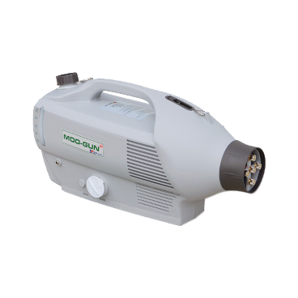
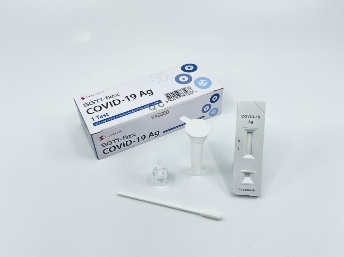
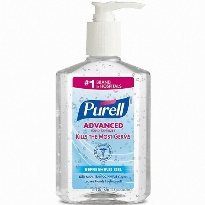
Slide 22
30 홍보 계획 총 9 개 매체 , 14 종 광고 방식으로 홍보 구분 온라인 온라인 매체 포털 사이트 미디어 홈페이지 SNS 채널 네이버 미디어 홈페이지 메타버스 유튜브 채널 인스타그램 커뮤니티 형태 정보 전달 보도자료 출석 이벤트 퀴즈 이벤트 동영상 소문내기 이벤트 리뷰이벤트 카페 세부구성안 네이버 행사 정보 등록 보도자료 작성 홈페이지 출석 이벤트 메타버스에서 진행되는 퀴즈 이벤트 동영상 촬영 및 편집 기대평 피드 업로드 시 추첨을 통해 상품 전달 행사 참여 후 인스타그램 리뷰 업로드 시 추첨을 통해 상품 전달 행사 정보 전달 구분 오프라인 온라인 매체 옥외광고 행사 형태 버스 정류장 광고 버스 랩핑 광고 가로등배너 야외 현수막 인플루언서 초청 만족도조사 이벤트 세부구성안 동래 , 서면 등 유동 인구수가 많은 곳에 포스터 활용 광고 대학가 인근 노선 포스터 활용 광고 부기 초청 및 부기 공식 인스타그램 채널 활용 홍보 행사 현장 , 사후 만족도 조사를 통해 빅데이터 수집 Part Ⅲ . 사업관리 1) 보고 프로세스 구축 4. 안전 및 방역 관리계획
Slide 23
제안개요 제안의 목적 및 배경 제안의 범위 제안의 특징 및 장점 기대효과 Ⅰ
Slide 24
30 Part Ⅲ . 사업관리 2) 행사별 큐시트 제작 5. 비상대응계획 비상시 대책 매뉴얼 및 사전교육을 통한 신속한 대처
Slide 25
32 Part Ⅲ . 사업관리 1) 비상 대책 매뉴얼 5. 비상대응계획 자체점검실시 ( 오전 , 오후 2 회 시설점검 / 점검 담당자 배정 ) 안전관리 필요 체험프로그램은 보조 진행요원 외 별도의 안전요원 배치 혼잡 상황 발생시 스텝 누구라도 관람객 동선 관리를 위해 사전교육 관람객 집중구역 혼잡상황 발생 대책 수립 및 질서유지 제작물 관리요원을 두고 수시로 무대 시설 등 순회 구조물 상태 체크 안전사고 발생에 대한 운영 매뉴얼을 구성하여 사전 교육 시설설비 전문회사와의 협업 자체 안전진단 매뉴얼 구성 및 실행 철저 안전사고 대비 관람객을 위한 대인 대물 행사장 보험가입 등 ( 최소 7 일전 ) 경호인력 배치 ( 입구 및 무대주변 / 야간 시설물 경호 ) 관람객 진 · 출입을 위한 동선관리 2. 종합상황실 및 비상시 대책 FLOW 행사장 내 종합상황실을 설치하여 운영 현장 즉각적인 대처 각종 상황 발생 시 현장 담당자는 종합상황실로 상황 보고 자체 유관 부서의 초기 대응 진행 및 외부 유관 기관에 신고 유관기관에 의한 상황 정리 및 사후 조치 진행 3. 의무 대책 지역 병원 및 119 의료진 협조를 통한 임시 의무 시설 설치 비상시 대책 매뉴얼 및 사전교육을 통한 신속한 대처 철저한 기상예보 모니터링으로 우천에 대비한 행사 준비 2024 년 9 월 날씨 예상 강수 확률 30% 미만 / 평균온도 20 도 D-7 일전 1 일 2 회 이상 수시로 기상 확인 실시 행사 진행 여부 실시간 협의 후 안내 우천시 안전대책 시스템 장비 및 전기 , 구조물 등 우천시 대책 마련 및 철거 5mm 이하 ( 적은비 ) 예정대로 진행 10mm 이하 ( 소나기성 ) 관계자 협의 후 결정 10mm 이상 ( 많은비 ) 관계자 협의 후 연기 1. 종합 안전관리계획
Slide 26
홍보 / 마케팅 홍보전략 수립 기념품 디자인 / 제작 Ⅳ
Slide 27
34 Part Ⅳ . 홍보 / 마케팅 1. 홍보전략 수립 1) 홍보전략 - 온라인 타깃 유료 광고 집행 · 최다 방문객 특징을 바탕으로 지역 , 성별 , 시간 설정 광고 집행 · 광고 노출 2 만 회 목표 설정 - 메인 디자인물 외에 SNS 홍보용 디자인물 추가 제작 · 메인 디자인 베리에이션으로 “ 톤 앤 매너 ” 유지 대형 포털 사이트 및 SNS 기반 빅데이터 키워드 분석 시스템 키워드 ‘ 국립부산과학관 ’ 최근 1 달 간 검색량 웹 : 2,990 모바일 : 15,000 최다 검색 인구 30·40 대 – 89.2% 여성 – 76.5% 타깃 유료 광고 집행 , 콘텐츠 기획부터 디자인까지 A to Z 원스톱 진행
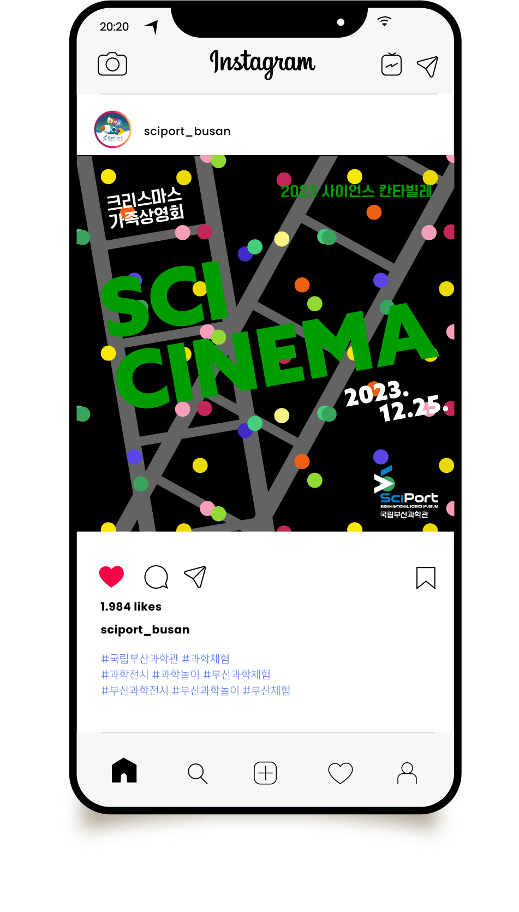
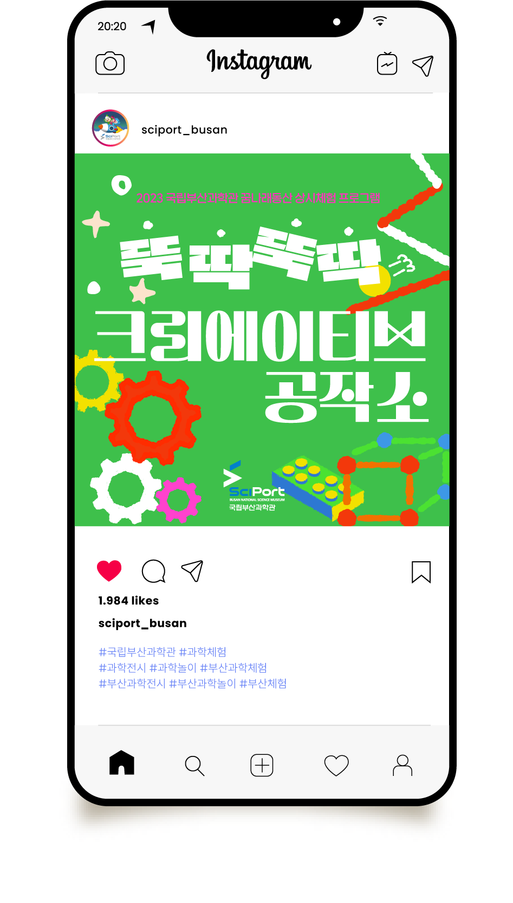
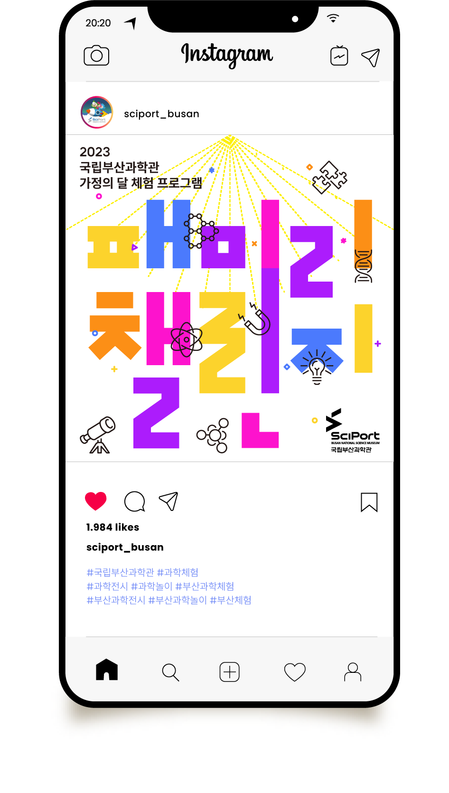
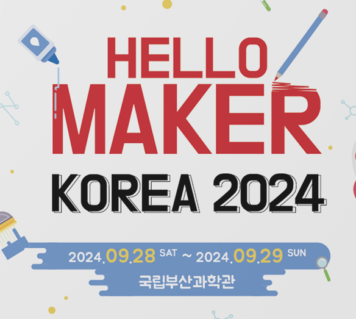
Slide 28
35 ▲계절 고려 단체복 350 장 제작 ▲포스터 (100 장 ) 외 각종 홍보물 일체 Part Ⅳ . 홍보 / 마케팅 2. 기념품 디자인 / 제작 1) 메인 행사 디자인 및 홍보물 제작
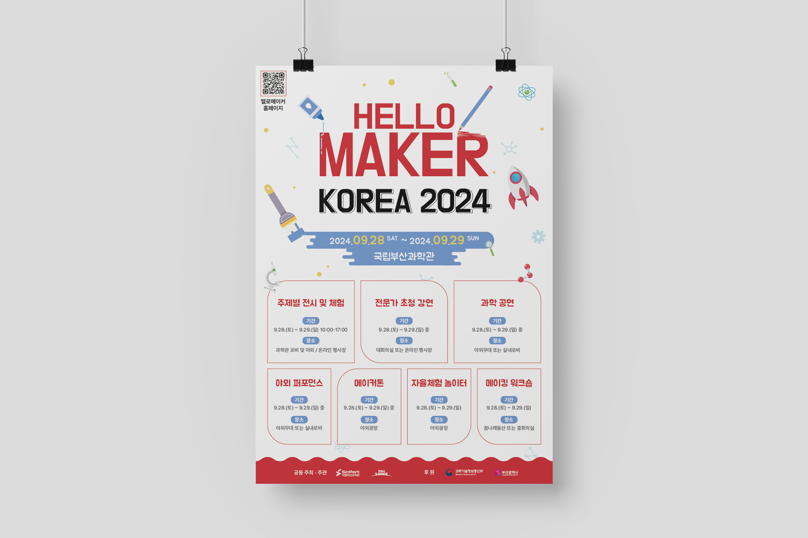
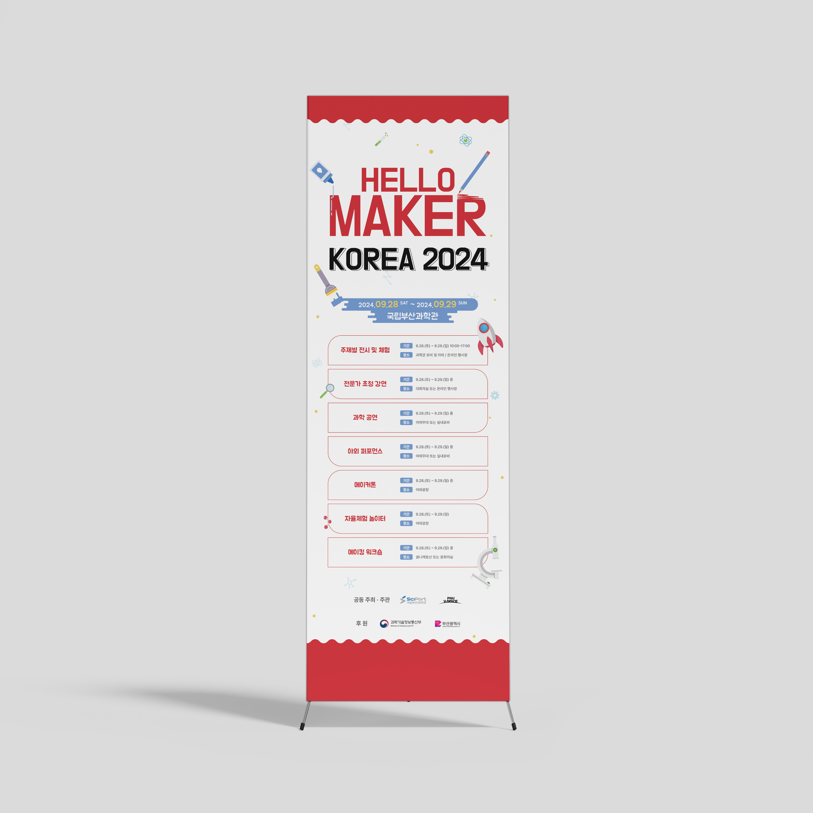

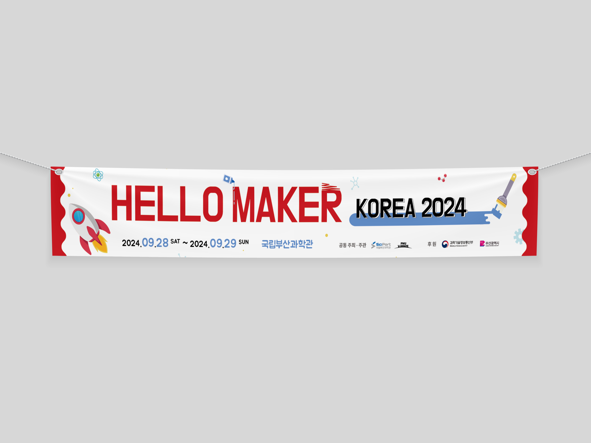


Slide 29
수영구 대표 야외 음악회 공연문화확산 , 대중 예술과 시민의 가교 부산 수영구(구청장 강성태)는 오는 31일 오후 7시 15분 수영구 생활문화센터에서 광안리 ‘발코니음악회’를 개최한다고 밝혔다. ‘발코니음악회’는 매월 마지막 주 토요일 광안리 테마거리에서 수영구생활문화센터 발코니를 바라보며 관객들이 함께 즐길 수 있는 수영구 대표 야외 음악회로 특히 광안리 M드론 라이트쇼 1부 종료 직후 이어서 진행돼 관람객들에게 더욱 풍성한 주말 문화 경험을 제공하고 있다. 이번 1월 공연은 남녀 혼성 5인조 그룹 ‘비스타(VISTA)’가 출연하여 추억의 복고풍 댄스 음악부터 최신 K-POP까지 전 세대를 아우르는 대중가요 메들리를 선보이며, 화려한 댄스 퍼포먼스와 함께 겨울밤을 뜨겁게 물들일 예정이다. 수영구는 “발코니음악회는 일상 속에서 주민과 관광객 모두가 함께 즐길 수 있는 수영구만의 생활문화 콘텐츠”라며 “1월 공연을 시작으로 매달 새로운 무대와 출연진을 선보일 예정이니 많은 관심과 참여를 부탁드린다”고 전했다. 202 6 . 0 1 . 13 . 부산일보 수영구, 오는 31일 ‘발코니음악회’ 개최 -단순 방문 통계 아닌 여행자들의 경험과 감성으로 전국 1위 -수영구, 스포츠 투어리즘 관광정책으로 -연말연시도 광안리와 민락수변공원에서 -문화관광재단 기초지자체 최초로 설립 추진 중 -광안리M드론라이트쇼, 대한민국 대표 야간 관광콘텐츠로 성장 -멋진 포토존도 광안리에 설치 202 5 . 12 09. BBS 광안리, 개장 이후 처음 해운대 넘어서...글로벌 문화도시로" ‘ 광안리 발코니 음악회 ' 대한민국 대표 야외 음악회로 성장 Part Ⅰ . 제안개요 1 . 제안의 목적 및 배경 1) 제안의 목적 및 배경 4
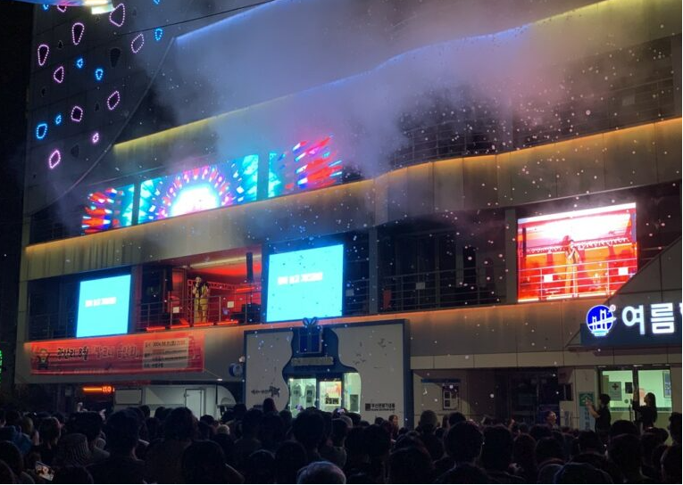
Slide 30
사업기간 착수일로부터 10 개월 행사 기간 : 2026. 3 월 ~ 12 월 , 총 10 회 운영 행사 일정 : 매월 마지막 주 토요일 1 회 개최 ( 동절기 10~12 월 ) 19:15~20:15, ( 하절기 3~9 월 ) 20:15~21:15 행사장소 수영구생활문화센터 발코니 주요과업 과업에 지시된 공연의 기획ㆍ구성ㆍ연출ㆍ집행ㆍ장소정비ㆍ행사준비ㆍ행사진행 출연자 ( 공연팀 , 연주팀 등 ) 섭외 및 행사 운영 책임자 ㆍ전문인력 배치 공연무대 조성 및 제작ㆍ설치 , 음향 및 조명장비 등 설치 및 운영 행사장 안전 및 재해 대책에 괗난 사항 ( 기상 상황 , 관객 및 보행자 안전관리 등 ) 기타 행사 개최 및 운영에 필요한 사항으로 발주처와 협의한 내용 최종 결과보고서 제출 1. 과업 개요 Part Ⅰ . 제안개요 2 . 제안의 범위 1) 과업개요 「광안리 발코니음악회」 행사 용역 과업명 4
Slide 31
0 1 행사 기 획의 차별화 0 3 지역을 위한 콘텐츠 0 4 대표 야외 공연 브랜드 0 2 안전한 공연 관람 환경 전문성 광안리 발코니 음악회 안전 상생 브랜딩 Part Ⅰ . 제안개요 3 . 제안 의 특징 및 장점 1) 제안의 특징 및 장점 10 회 공연 콘텐츠 및 프로그램의 프로세스 체계화 관객 호응과 참여를 이끄는 공연 콘텐츠 공연 외 관람 만족도를 높이는 기획 다양한 행사 경험으로 검증된 콘텐츠 지역 아티스트 오픈스테이지 ( 메인공연 10 분전 사전공연 ) 상권 연계 체류형 콘텐츠 기획 ( 수영구민과 관광객의 상생을 위한 콘텐츠 ) 글로벌 관광 거점화 ( 광안리 M 드론라이트쇼 등 대형 행사와 연계된 야간 간광 콘텐츠로 브랜딩 ) 6 안전한 공연을 위한 시설 , 장치 운영 공연 전후 시간 물리적 동선 분리 ㆍ관람객 밀집에 대비한 안전 관리 시스템 공연 콘텐츠 아카이빙으로 지속적인 브랜딩
Slide 32
Part Ⅰ . 제안개요 4 . 기대효과 1) 기대효과 7
Slide 33
행사 기획 및 운영계획 행사 기획 및 연출 연간 총괄 계획 월별 세부계획 특별공연계획 행사장 구성 계획 인력 운영계획 Ⅱ
Slide 34
Part Ⅱ . 사업추진계획 1) 기획의도 및 콘셉트 1 . 사업 총괄 계획 9 K- 로컬의 중심 참여형 공연 문화 세계가 주목하는 상생 콘 테라스와 광안리 해변을 잇는 이색적인 공간연출로 차별화된 K- 공연 문화 관광객이 직접 참여하고 즐기는 이벤트 확대 참여형 이벤트를 통한 숨은 스팟찾기 외국인 관광객들이 좋아 할 만한 콘텐츠 구성을 통한 프로그램 운영 거주민과 관광객들이 직접 참여하며 체험하며 만들어가는 축제 친환경 캠페인 참여를 통한 친환경적인 축제 운영 매월 마지막 주 토요일 광안리의 밤을 밝히는 공연 “ ” 다시 찾고 싶은 광안리, 매월 마지막주 토요일 광안리의 밤을 밝히는 야외 공연 KEYWORDS
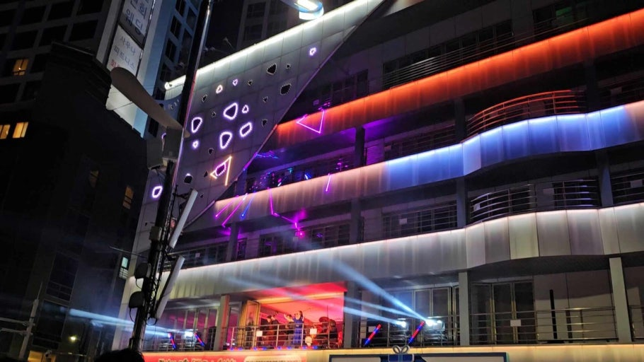
Reference 35
\n \n \n 「광안리 발코니음악회 」행사 용역 \n 과 업 지 시 서 \n \n \n \n \n \n \n \n \n \n \n \n \n \n \n 2026. 1. . \n \n \n \n 부산광역시 수영구 \n \n 문화예술과 \n \n \n \n 목 차 \n \n \n \n \n \n 1. 과업 개요 1 \n \n \n 2. 과업 내용 1 \n \n \n 3. 과업 수행지침 4 \n \n \n 4. 보고 및 성과품 8 \n \n \n 5. 참고자료 10 \n \n \n \n \n \n 1 \n \n 과업 개요 \n \n 1. 과 업 명 : 「 광안리 발코니음악회」행사 용역 \n 2. 과업기간 : 착수일로부터 10개월 \n - 행사기간 : 2026. 3월 ~ 12월 총 10회 운영 \n - 행사일정 : 매월 마지막 주 토요일 1회 개최 \n [동절기 10~12월] 19:15~20:15, [하절기 3~9월] 20:15~21:15 \n ※ 공연일정(횟수) 및 시간은 발주 기관의 사정에 따라 변경 가능 \n - 행사장소 : 수영구생활문화센터 발코니 \n 3. 과업예산 : 금126백만원(금일억이천육백만원), 부가가치세 포함 \n 4. 계약방법 : 협상에 의한 계약(제한경쟁입찰: 지역제한, 중소기업제한/ 총액계약) \n 5. 과업목적 \n 가. 발
Reference 36
코니음악회를 수영구만의 특색 있는 대표 문화공연 브랜드로 추진 \n 나. 지역예술가 및 청년예술가들의 참여를 통해 문화예술계를 지원하고 광안리를 찾는 주민과 관광객에게 다양한 문화향유의 기회 제공 \n 다. 매월 공연 시기를 고려한 공연 프로그램 기획과 새로운 콘셉트의 공연을 통해 다시 찾고 싶은 광안리 조성 \n \n 2 \n \n 과업 내용 \n \n 1. 과업 범위 \n 가. 공간적 범위 : 수영구생활문화센터 발코니 \n 나. 시간적 범위 : 착수일로부터 10개월(계약 시부터 정산완료까지) \n 다. 내용적 범위 \n 1) 과업에 지시된 공연의 기획·구성·연출·집행·장소정비·행사준비·행사진행 \n 2) 출연자(공연팀, 연주팀 등) 섭외 및 행사 운영 책임자·전문 인력 배치 \n 3) 공연무대 조성 및 제작·설치, 음향 및 조명장비 등 설치 및 운영 4) 행사장 안전 및 재해 대책에 관한 사항(기상 상황, 관객 및 보행자 안전관리 등) \n 5) 기타 행사 개최 및 운영에 필요한 사항으로 발주처와 협의한 내용 \n 6) 최종 결과보고서 제출 \n \n 2. 과업의 주요내용 \n 분야 \n 주요사항 \n 공연 \n 기획·진행 \n 및 \n 기타 운영 \n 가. 행사 기획 및 운영 \n 나. 공연 무대 및 공연 시스템(음향, 조명 등) 설치 및
Reference 37
운영 \n 다. 공연 및 관람객·보행자 안전 관련 대책 수립 \n 라. 기타 제안 \n \n \n 가. 「발코니음악회」행사 기획 및 운영 \n 1) 공연 전반에 대한 기획 및 연출 \n ○ 발코니음악회에 대한 목표 및 비전 제시 \n ○ 연간 총괄 운영 계획 및 매월 세부계획 수립 및 제출 \n (공연계획, 예산집행계획, 수행인력 등) \n ○ 시기(여름 휴가철: 6,7,8월/ 연말: 12월) 특수성을 반영한 특별 공연(4회 이상) 수립 \n ○ 우천 등 다양한 상황 발생에 대한 대책 수립 \n 2) 매월 세부공연 운영 계획 수립 및 제출 \n ○ 월별 공연 내용 상호 협의, 공연 3주 전까지 운영 계획 제출 \n ○ 공연 기획에 맞는 출연자 섭외 및 진행 \n 3) 행사운영 \n ○ 행사 관련 경험 및 전문지식을 갖춘 행사 담당자 배치 및 현장 상주 \n ○ 무대준비, 리허설, 공연진행, 마무리 정리 등 행사 전반 운영 \n ○ 우천 및 기후에 따른 개최 불가 시 발주처와 협의에 의해 일정 변경 \n ○ 최종 결과보고서 제출 \n \n \n \n 나. 「발코니음악회」공연 무대 및 음향 및 조명 등 시스템 운영 \n 1) 수영구생활문화센터 발코니를 활용한 공연 무대 마련 \n ○ 수영구생활문화센터 2층 발코니가 공연 장소로 구조물(백월, 트러스
Reference 38
등) 활용한 무대 분위기 조성 \n 2) 음향 및 조명 등 공연 관련 시스템 운영 \n ○ 행사 현장 및 공연 내용에 맞는 음향 및 조명 등 장비 설치 및 운영 \n ○ 관객석에서 무대(공연자 포함) 보일 수 있도록 구조물 등 활용 별도 조명 설치 \n ○ 음향 및 조명 장비 등에 대한 전문가 또는 담당자 배치 \n ○ 발주자와 협의에 의해 장비 물량 등 조정 \n ○ 행사 종료 후 물품·청소 정리 및 원상복구 \n \n 다. 공연 및 관람객·보행자 안전관리 대책 수립 및 추진 \n ○ 인력운집, 안전사고 대비 안전관리 대책 수립 \n ○ 안전 시설물(안전차단봉, 안전띠, 안전펜스 등)의 설치 등 안전관리 \n ○ 시설물 관리 등 행사 관리 요원 현장 배치(5명 이상) \n ○ 관람구역과 구분된 안전통행로 설치 \n ※ 과업 중 수행업체의 부주의로 안전사고 발생 시 수행업체 책임 \n \n 라. 기타 제안 \n ○ 행사 홍보 현수막 및 행사장 인근 안내 배너 등 설치 \n ○ 본 과업을 성공적으로 추진하기 위한 추가 제안 가능 \n (발주처 제안 외 자유롭게 제안 가능) \n ○ 수행사 선정 시 사업에 포함하여 시행해야 함 \n \n \n \n 3 \n \n 과업 수행지침 \n \n 1. 일반 사항 \n ❍ 본 과업지시서는 「발코니음악회」운영 용
Reference 39
역을 원활히 수행하기 위한 사항을 규정하였는바, 이에 규정되지 아니한 사항은 관련 법령 및 각종 지침에 의하여 발주기관과 협의하여 수행하여야 한다. \n ❍ 본 과업지시서에 명시되지 않은 사항이라도 발주처가 필요하다고 \n 인정되는 중요사항은 과업내용에 추가할 수 있으며, 이에 소요되는 \n 경미한 비용은 수급인과 협의하여 정한다. \n ❍ 과업수행자는 본 과업 전반에 대해 발생 가능한 제반 문제점을 고려 하며 필요 시 이에 대한 대책과 해소방안을 발주기관과 긴밀하게 협의한다. \n ❍ 본 과업으로 인하여 수급인이 제3자에게 피해를 주었을 경우 수급인이 \n 손실 보상하여야 한다. \n ❍ 과업수행 중 고용인이 과업수행에 부적당하다고 인정될 때에는 발주처가 \n 즉시 교체를 요청할 수 있으며 수급인은 이에 따라야 한다. \n ❍ 수급인은 과업수행 및 제출한 성과품에 대하여 전반적이고 최종적인 \n 책임을 진다. \n ❍ 과업수행자가 사업일체를 수수료만 취하고 하도급하는 것은 불가하며, 이러한 사항이 발견될 경우에는 계약이 취소될 수 있고, 계약의 해지에 따른 책임은 과업수행자가 부담하여야 한다. \n 본 과업지시서에 누락되었거나 새로운 과업이 필요할 경우 추가 협의하여 정한다. \n \n 2. 수행 방법 \n ❍ 본 과업의 추진상황에 대하여
Reference 40
발주처인 수영구청과 지속적인 협의를 통해 진행하여야 한다. \n ❍ 과업 주체기관의 자료요구가 있을 경우에는 과업수행자는 특별한 사유가 없는 한 즉시 응해야 한다. \n ❍ 본 과업의 수행기관은 과업 상세 추진일정표를 작성하여 과업기간 내에 과업을 완료할 수 있는 운영인력을 구성해야 한다. \n 과업수행자는 본 과업의 수행에 필요한 기술과 경험을 가진 근로자를 채용하여야 하며, 근로자의 행위에 대하여 모든 책임을 부담해야 한다. \n 본 과업에 참여하는 과업수행책임자와 참여인력은 과업기간 중 임의로 교체할 수 없으며, 교체가 불가피한 경우에는 발주기관의 사전승인을 받은 후 교체하여야 한다. \n 과업담당자 및 관련 인력의 근무태도 불성실, 업무능력 미비 등 계약의 수행에 부적당하다고 발주기관이 판단하여 인력의 교체를 요구한 경우, 과업수행자는 이에 응하여야 한다. \n \n 3. 과업의 착수 및 진행상황 보고 \n ❍ 과업은 계약체결 후 10일 이내에 착수보고회를 개최하여야 하며, 착수 보고회 시 다음의 서류를 제출하여야 한다. 단, 발주처와 협의 시 서면으로 갈음할 수 있다. \n - 과업수행 조직 구성 및 분야별 인력투입계획 \n - 과업추진 예정일정표 \n - 과업수행계획서 \n - 기타 용역추진에 필요한 사항 \n 과업수행자
Reference 41
는 계약체결 후 7일 이내까지 총괄책임자를 임명하고, 과업수행자는 모든 업무 단계에서 발주기관과 진행상황을 공유해야하며 단계별(착수보고회, 최종보고회 및 발주처에서 회의 개최 요구 시 즉시) 보고회 및 점검회의를 실시하여야 한다. \n 과업수행자는 과업수행방법 및 성과의 세부내용을 검토하기 위해 발주기관의 요구가 있을 때 필요한 자료를 총괄책임자로 하여금 설명 하도록 하여야 하며, 발주기관의 지시사항에 대하여는 성실히 이행하고 조치 결과를 보고하여야 한다. \n 과업수행자는 전체사업에 대한 결과(완료) 보고서를 최종공연 후 14일 이내 발주기관에 제출하여야 한다. 다만, 부득이한 사유가 있는 때에는 상호 협의하여 제출기한을 변경할 수 있다. \n 4. 지도 및 감독 \n 발주기관은 이 과업과 관련하여 과업수행자의 업무를 지도·감독한다. \n 발주기관은 필요한 경우 사업과 관련된 각종 자료의 제출을 요구하거나 소속 직원 또는 지정하는 자로 하여금 과업수행자의 업무 처리 또는 관련서류 등에 대하여 검사 또는 평가하게 할 수 있으며, 과업수행자는 이에 따라야 한다. \n 발주기관은 사업과 관련한 과업수행자의 사무처리가 관계법규 등에 위배되거나 부당하다고 인정되는 때에는 이에 대한 시정을 요구하거나 직접 시정조치를 할 수 있으며 이 경
Reference 42
우 과업수행자는 정당한 사유가 없는 한 이에 응하여야 한다. \n 과업수행자는 사업과 관련하여 발생하는 사건·사고에 대하여 형사 상의 모든 책임을 지며, 다만 과업수행자가 귀책사유 없음을 입증하는 경우에는 그러하지 아니하다. \n 과업수행자의 귀책사유로 인하여 발주기관이 제3자에게 이 사업과 관련된 손해배상 등을 한 때에는 과업수행자는 이를 발주기관에 지체 없이 배상하여야 한다. \n \n 5. 과업의 중지·연장·기간 조정 및 용역계약의 해지 \n ❍ 과업의 중지 등 \n - 과업수행 중 관계기관과의 협의 또는 발주처의 필요로 인하여 원활한 과업추진에 지장이 초래될 우려가 있을 시는 발주처와 협의하여 과업 기간을 중지 또는 연장할 수 있다. 이 경우 과업기간 조정 협의가 원만히 성립되지 않을 경우에는 발주처의 결정에 따라야 한다. \n - 과업수행 중 부득이한 사유로 인해 당초 공정대로 시행이 어려운 경우에는 계약만료일 이전에 관계 사유를 명기하여 연기원을 제출 하여야 하며, 그 사유가 타당하다고 인정될 때에는 관계법령이 정하는 범위 내에서 계약기간을 조정할 수 있다. \n ❍ 용역계약의 해지 \n - 발주처는 과업수행이 불가능하다고 인정되거나 과업수행자가 발주처의 정당한 지시에 불응할 때는 계약해지를 요구할 수 있다. \n \n 6. 성
Reference 43
과물의 소유 \n ❍ 과업의 성과물에 대한 지적재산권 일체와 2차적 저작물 또는 편집 \n 저작물의 작성권은 발주처가 소유하며 발주처는 필요시 결과물의 \n 내용을 일부 보완 또는 수정할 수 있다. \n ❍ 과업수행과 관련하여 수집·생산된 모든 서류 및 자료는 본 과업과 \n 관련되지 아니한 용도로 사용할 수 없으며 발주처의 사전승인 없이는 제3자에게 제공할 수 없고 성과물 제출 시 함께 제출하여야 한다. \n ❍ 과업수행자는 본 과업수행 결과물에 대하여 타인으로부터 지적재산권 등에 대한 분쟁 발생 시 이에 대한 책임을 지고 수정·보완 또는 재작업을 수행하여야 한다. \n \n 7. 보안사항 \n 과업수행자는 과업 착수와 동시에 보안각서를 제출하고, 본 과업과 관련하여 취득한 비밀을 일체 누설할 수 없다. \n 발주기관이 공개에 동의한 사항 외 일체의 자료나 정보 등이 외부에 유출되지 않도록 관리에 만전을 기해야 한다. \n 과업수행 중 보안에 관계되는 사항에 대하여는 과업수행자는 보안 통제를 엄격히 하여야 하며, 보안사항 누설로 인하여 사회적인 물의를 야기하였을 때, 발주기관은 본 과업의 과업수행자에게 민 ‧형사상의 책임을 물을 수 있다. \n \n \n 8. 안전사고의 책임 \n 과업수행자는 본 용역을 수행함에 있어 안전에 대한
Reference 44
제반 대책을 강구하여 안전사고가 발생되지 않도록 해야 한다. \n 과업수행자는 화재 기타 물적·인적 손해를 끼친 경우에는 변상 또는 원상복구를 하여야 한다. \n 행사의 안전사고 예방에 필요한 모든 조치를 하여야 하고 시설물 관리 등 현장 요원을 관람구역에 별도 배치하여 안전관리를 최우선으로 하여야 한다. \n \n 9. 기타사항 \n 과업수행자는 계약체결시 제출한 산출내역을 기준으로 용역비를 집행 하되, 실제 집행내역 및 금액에 대한 변동사항이 발생할 경우 발주기관과 사전 협의해야 한다. \n 시스템 설치 및 운영 등 관리의무를 태만하여 출연자, 진행자, 장비 등에 대하여 사고 등의 손해가 발행한 경우 과업수행자가 일체 책임을 져야 한다. \n 기타 과업수행 시 보안사항 불이행으로 발생되는 모든 책임은 수급인이 진다. \n 이 계약에 관한 소송은 발주기관의 소재지를 관할하는 법원에서 행한다. \n 기타 명시되지 아니한 사항이나 수정이 필요한 사항 등은 발주기관과 과업수행자가 협의하여 정한다. \n \n \n 4 \n \n 보고 및 성과품 \n \n 1. 과업추진 상황보고 \n ❍ 착수보고회 : 계약체결일로부터 10일 이내 \n - 과업수행계획, 운영인력 구성, 용역 추진일정, 용역비 사용계획서 등에 관한 착수보고를 하
Reference 45
여야 하며, 발주처와 협의가 있을 경우 서면으로 갈음할 수 있음 \n ❍ 최 종보고회 : 과업 완료 이전 \n - 사 업운영 실적보고서 \n - 과업 수행과 관련된 기록 자료 일체(사진, 영상 등) \n - 개선 및 보완사항 제언 등 \n - 발주처와 협의 시 서면으로 갈음 가능 \n ❍ 수시보고 : 보고회는 상호협의 하여 추진하되 발주처가 필요하다고판단하는 경우 수시 보고 \n \n \n 2. 성과품 납품 \n 종류 \n 제출시기 \n 보고내용 \n 사업수행계획 \n (착수보고서) \n 계약 후 \n 10일 이내 \n ㆍ최종협상 내용 반영 연간 공연계획, 인력 및 예산 등 \n 월별 행사 계획 \n 행사시작 3주 이내 \n ㆍ매월 공연운영 계획(출연진 섭외 포함) \n 최종보고서 \n 사업 종료 후 14일 이내 \n ㆍ 사업운영 실적보고 \n 기 타 \n 이슈 발생 즉시 \n ㆍ 행사 추진 관련 사항 변경 시 보고 \n ㆍ 과업파악, 점검 등을 위해 발주처 요구 시 수시보고 \n \n \n \n \n \n \n \n \n \n \n \n \n \n \n \n \n \n \n \n 5 \n \n 참고자료 \n \n 1. 현장사진 \n \n 14224 0 \n 건물외부사진 \n 발코니사진 \n \n \n 공연무대(내부) \n 공연무대(외부) \n
Reference 46
\n \n 관람객 방면 \n 관람객 방면 \n \n 부산광역시 수영구 공고 제2026-100호 \n \n 「광안리 발코니음악회 」행사 용역 입찰 공고 \n (협상에 의한 계약) \n \n 「지방자치단체를 당사자로 하는 계약에 관한 법률 」제 9조 및 같은 법 시행령 제43조 규정에 따라 제안서 제출 및 입찰에 관한 사항을 다음과 같이 공고합니다. \n \n \n 1. 입찰에 부치는 사항 \n 가. 사 업 명 : 광안리 발코니음악회 행사 용역 \n 나. 용역기간 : 착수일로부터 10개월 ※ 행사기간 : 2026. 3월 ~ 12월 총 10회 운영 \n 다. 용역내용 : 과업지시서 및 제안요청서 참조 \n 라. 기초금액 : 금126백만원(금일억이천육백만원, 부가가치세 포함) \n ※ 본 사업예산은 부가가치세가 포함된 금액이므로 입찰자가 면세사업자인 경우 입찰금액은 반드시 부가가치세를 포함하여 투찰하여야 하며, 입찰결과 낙찰자가 면세사업자인 경우 낙찰금액에서 부가가치세 상당액을 차감한 금액을 계약금액으로 함 \n \n 2. 입찰 및 계약방법 \n 가. 입찰방식 : 총액계약, 제한경쟁 입찰(지역제한, 중소기업제한) \n 나. 계약방식 : 협상에 의한 계약 \n 다. 평가방법 \n \n 1차 평가 \n \n 2차 평가 * \n \n \n 정량적 평가 \n
Reference 47
(Pass or Fail) \n \n 정성적 평가(80점) \n \n 협상적격자 선정 \n \n \n + \n 가격평가(20점) \n \n \n * 1차 평가 통과 업체(상위 6개 업체)에 한해 2차 평가 실시 \n 라. 배 점 표 : 제안요청서 참조 \n \n 3. 입찰참가 자격 및 조건 \n ※ 아래의 자격을 모두 갖춘 업체이어야 합니다. \n 가. 「지방자치단체를 당사자로 하는 계약에 관한 법률 시행령 」제 13조 및 동법 시행규칙 제14조의 규정에 의한 입찰 참가자격을 갖추고, 공고일 전일부터 계약 체결일까지 본점의 소재지를 부산에 둔 사업자로 제한하며, 동법 시행령 제92조의 부정당업자의 입찰 참가자격 제한기준에 해당하지 않은 업체 \n 나. 국가종합전자조달시스템(나라장터)에 입찰서 제출 마감일 전일 까지 기타자유업(행사대행업, 업종코드 9901)으로 등록을 필한 업체 \n 다. 「 중소기업기본법 」 제2조에 따른 중 소기업 또는 「소상공인 보호 및 지원에 관한 법률 」제 2조에 따른 소상공인으로서 「중소기업 범위 및 확인에 관한 규정 」에 따라 발급된 중소기업·소상공인 확인서를 소지한 업체 \n * 제안서 제출 마감일까지 발급된 것으로 유효기간 내에 있어야 하며, 중소기업 공공구매 종합정보망( http://smpp.go.kr )에서 확
Reference 48
인이 되지 않을 경우 입찰 참가자격이 없습니다. \n * 「중소기업제품 구매촉진 및 판로지원에 관한 법률 시행령 」제 2조의3 제1항 제2호에 해당하는 비영리법인은 입찰 참여가 가능합니다. \n 라. 「중소기업제품 구매촉진 및 판로지원에 관한 법률 」 제9조 및 같은 법 시행령 제10조의 규정에 따라 직접생산확인증명서를 소지한 업체 \n \n 4. 입찰 참가 제한 \n 가. 「지방자치단체를 당사자로 하는 계약에 관한 법률 시행령 」제 92조 각 호에 해당하는 업체 \n 나. 낙찰자는 계약체결일까지 당해자격을 계속 유지하여야 하며, 기타 명시되지 아니한 사항은 「지방자치단체 입찰시 낙찰자 결정기준 」 (행정안전부예규 제344호 : 2025.11.24.) 에 따름 \n 다. 제안서 제출 마감일 현재 휴·폐업, 영업정지 등의 처분기간 중인 업체이거나 부도, 파산, 해산, 영업정지 등의 상태에 있는 업체 \n 라. 공동수급 및 제3자 일괄 하도급(재용역) 불가 \n \n 5. 추진일정 \n \n 구 분 \n 일 정 \n 비 고 \n 1. 제안서 접수 \n (제안서 제출시 평가위원 추첨) \n 2026. 2. 11.(수) \n 09:00 ∼ 17:00 \n - 장 소 : \n 수영구청 3층 문화예술과 사무실 \n 2 . 1차 평가(정량적 평가) \n 통과
Reference 49
업체 공고 \n 2026. 2. 13.(금) \n - 수영구홈페이지( http://www.suyeong.go.kr ) \n - 선정방법 : \n 정량적 평가 결과 상위 6개 업체 \n 3. 제안서 설명 및 평가 \n (1차 평가 통과 업체에 한함) \n 2026. 2. 25.(수) \n 14:00(예정) \n - 장 소 : \n 수영구청 대회의실 \n 4. 우선협상대상자 선정 \n 2026. 2. 25.(수) \n 제안서평가 직후 \n - 선정방법 : \n 제안서 평가 결과 고득점자순 \n 5. 협상 및 계약 \n 2026. 2. 27.(금) ~ \n - 장 소 : \n 수영구청 3층 문화예술과 사무실 \n ※ 위 일정은 구 사정에 따라 변경될 수 있으며, 변경 시 수영구청 홈페이지 공지 또는 유선통보 \n \n \n 6. 입찰등록 및 제안서(가격제안서 포함) 제출 : 방문제출 \n 가. 제 출 처 : 수영구청 3층 문화예술과 \n 나. 제출일시 : 2026. 2. 11.(수) 09:00~17:00 *제안서 제출시 평가위원 추첨 예정 \n 다. 제출서류 및 제안서 내용 : 제안요청서 참조 \n 라. 제출방법 : 직접 방문 접수(우편, 이메일 접수 불가) \n \n 7. 제안서 평가 \n 가. 일시 : 2026. 2. 25.(수) 14:00(예정
Reference 50
) \n 나. 장소 : 수영구청 대회의실 \n 다. 제안설명 및 평가방법 등 기타 사항 : 제안요청서 참조 \n \n 8. 협상적격자 선정 및 협상기준 \n 가. 제출된 제안서에 의한 정성적 평가, 가격평가 등 종합평가 \n 나. 정성적 평가 점수가 배점 한도(80점)의 70%(56점) 이상인 자에 한하여 협상적격자로 선정, 협상적격자 중 가격점수를 합하여 합산점수의 고득점 순으로 협상 실시(단, 합산점수가 70점 이상인 제안 업체가 없을 경우에는 재공고 할 수 있음) \n ※ 제안서 평가는 1차 평가(정량적 평가)와 2차 평가(정성적 평가, 입찰가격 평가)로 구분하며, 1차 평가(정량적 평가) 통과 업체(상위 6개 업체)에 한하여 2차 평가를 실시하고 2차 평가의 배점은 정성적 평가 80점, 입찰가격평가 20점임 \n ※ 가격제안서(입찰서)의 입찰가격이 기초금액을 초과하는 경우 협상적격자에서 제외됨 \n ※ 협상적격자가 없는 경우에는 재공고 입찰에 부칠 수 있음 \n ※ 기타 제반 사항은 지방자치단체 입찰시 낙찰자 결정기준(행정안전부 예규)에 의함 \n \n \n 9. 입찰보증금 납부 및 귀속 \n 가. 입찰보증금 납부는 면제하며, 입찰보증금 지급확약 내용이 포함된 입찰참가신청서로 갈음함 \n 나. 입찰보증금의 귀속은 「지방자치단체를 당사자로